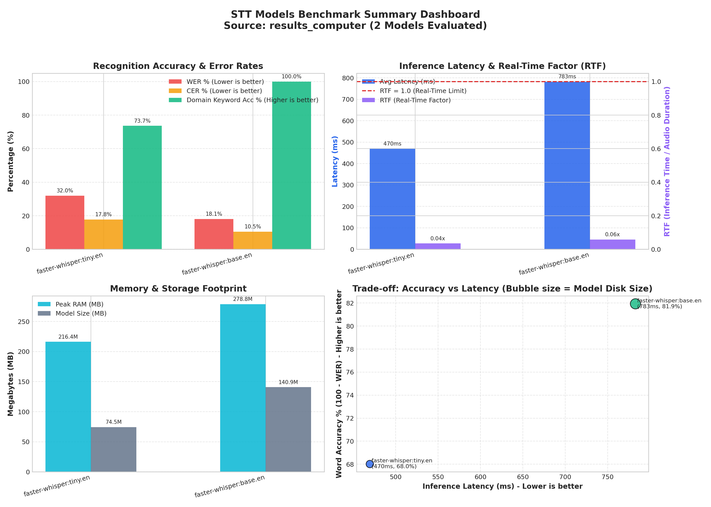
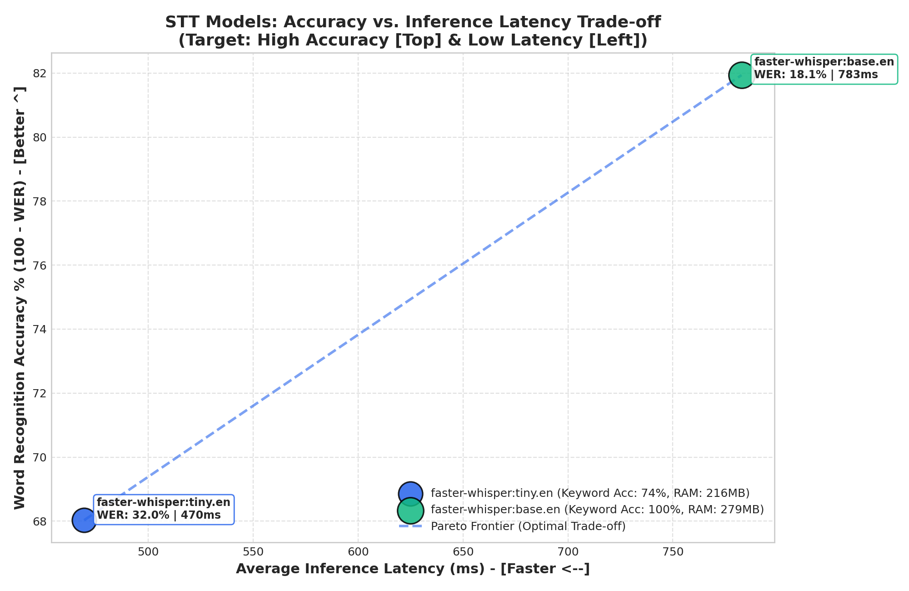
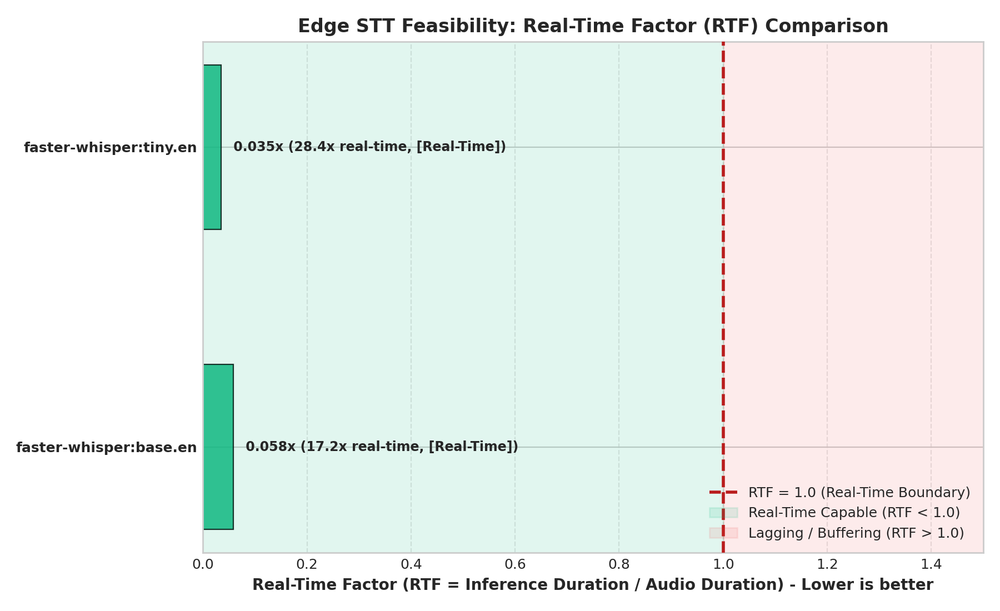
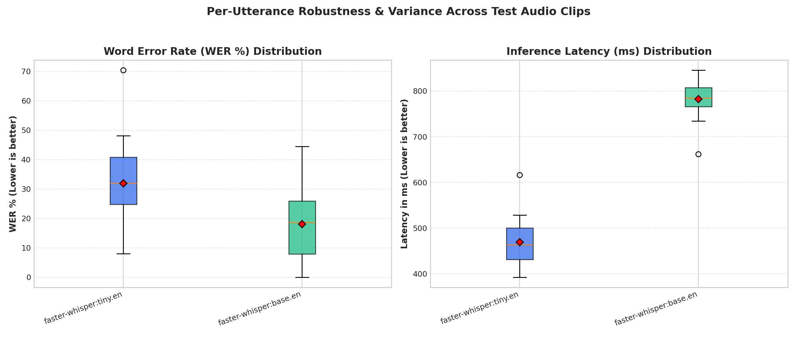

Source: C:\Users\lucia\Desktop\hackestiu\stt-benchmark\python\results_computer | Platform: Linux-7.0.0-g122c2c22d838-aarch64-with-glibc2.41 | Tested Models: 2
faster-whisper:base.en achieves the most balanced edge profile: 18.1% WER, 783 ms latency (0.06x RTF), and 279 MB peak RAM.
| Rank | Model / Engine | Avg WER | Avg CER | Keyword Acc | Latency (ms) | RTF / Real-Time | Peak RAM | Model Size | Domain Bias |
|---|---|---|---|---|---|---|---|---|---|
| #1 | faster-whisper:base.en | 18.1% | 10.5% | 100.0% | 783 ms | 0.058x (Real-Time) | 278.8 MB | 140.9 MB | Yes |
| #2 | faster-whisper:tiny.en | 32.0% | 17.8% | 73.7% | 470 ms | 0.035x (Real-Time) | 216.4 MB | 74.5 MB | Yes |



